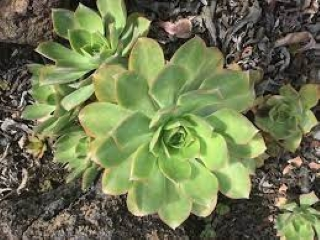
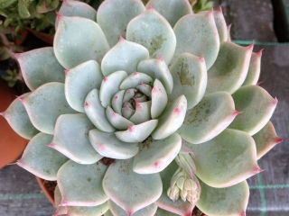

SUCULENTAS
¿Qué son?
Las suculentas o crasas son un grupo de plantas que almacenan el agua en sus hojas, tallos y raíces. Las hojas tienden a ser gruesas, pero algunos géneros y especies tienen hojas más gruesas que otras. Las suculentas tienden a prosperar en climas secos y poco húmedos. Es por esto que algunas de estas plantas no prosperan en lugares donde el índice de humedad es alto. Otras se aclimatan bien, pero requieren más cuidados. En otras palabras, las suculentas son plantas que almacenan agua.Características
Si bien la mayoría de las suculentas nos lleguen de regiones áridas, también se encuentran en bosques, zonas tropicales secas, picos de montañas, costas y hasta pantanos. No obstante, las suculentas más comunes son las que llegan de regiones áridas. Existen más de 60 familias que se clasifican como suculentas y aunque parezca ilógico, los botánicos difieren sobre que plantas son técnicamente suculentas. El ser tan diferente una de otras dificultades el trabajo de clasificarlas. Algo que tienen en común son sus hojas y tallos hinchados por el almacenamiento del agua. La mayoría de las suculentas prefieren temperaturas cálidas y no son capaces de soportar temperaturas muy frías. Debido al agua que almacenan sus hojas, la congelación a menudo dará lugar a la muerte de la planta. Algunas especies de sedums y sempervivums son capaces de soportar temperaturas bajo cero. Los extremos en temperatura, la exposición al sol, así como la carencia de agua dan lugar a menudo a un cambio de color es las suculentas. Cambian a tonalidades rosa, naranja, rojo y purpura. A esta práctica se le conoce como estresar las suculentas. Por eso algunos dicen que “las suculentas tienden a sonrojarse cuando se ven estresadas”.Cuidados
Hay que tener en cuenta que las suculentas no son una sola familia, sino muchas de ellas, y cuentan con una enorme cantidad de especies. Debido a esto, sus necesidades pueden ser bastante diferentes en función de la especie concreta. Sin embargo, la mayoría de ellas comparte algunas cosas. Resumidamente, estos son los principales cuidados de las plantas suculentas necesitan:• Luz: la gran mayoría de suculentas necesitan de grandes cantidades de luz solar, incluso directa.
• Tierra: no son plantas exigentes con los nutrientes, así que solo necesitan un buen drenaje.
• Riego: no toleran los excesos de riego ni los encharcamientos.
• Clima: la mayoría de ellas son de climas cálidos.
Luz y ubicación
La mayoría de suculentas proviene de ambientes desérticos en que están expuestas a temperaturas muy altas y a un influjo solar muy intenso. Sin embargo, para tenerlas en casa no necesitan de estar expuestas directamente al sol,y de hecho, muchas de sus especies se deshidratarán si las expones a un sol muy intenso. Así, lo ideal es mantenerlas en ubicaciones muy luminosas, pero a cubierto de las horas más intensas de sol. Una forma de saber que están recibiendo demasiado sol es si ves que las hojas se resecan o adoptan tonos marrones o rojizos.Riego
Dado que estas plantas son capaces de almacenar grandes reservas de aguas en sus hojas o tallos, la mayoría de ellas no precisa apenas de riegos. De hecho, la gran mayoría de suculentas no tolera los excesos de humedad en el sustrato, y si las encharcas al regar o las riegas demasiado a menudo es muy probable que sus raíces se pudran y la planta muera. En la mayoría de casos, bastará con un riego cada 10 o 15 días, o como mucho un riego semanal en los meses cálidos. Además, muchas especies de suculentas son colgantes o aéreas. En estas, lo mejor es practicar un riego por inmersión, que permite a la planta coger el agua que necesita sin sufrir de excesos de humedad después. También te recomendamos aprender con estas guías a reconocer Cuándo regar las plantas y Cómo regar las plantas suculentas - consejos. Sustrato y abono para suculentas Las plantas crasas no resultan nada exigentes con los nutrientes del suelo, por lo que la prioridad al elegir el sustrato es que ofrezca un buen drenaje. Si abonas tus suculentas, utiliza abono específico para este tipo de plantas, y presta atención a las dosis y frecuencia indicados. Un exceso de abono tampoco les hará bien. Lo ideal es utilizar sustrato para cactus o plantas crasas, o como mucho una mezcla de este con sustrato universal. Aquí te dejamos una guía para que sepas Cómo hacer sustrato para plantas suculentas.

